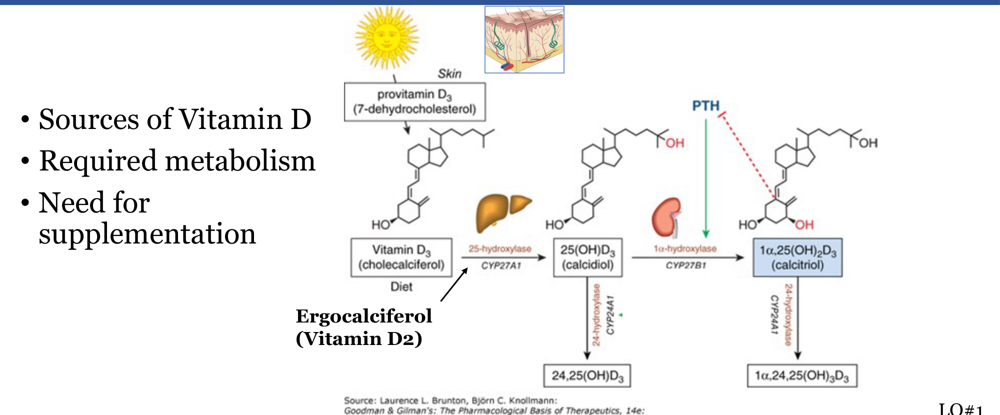
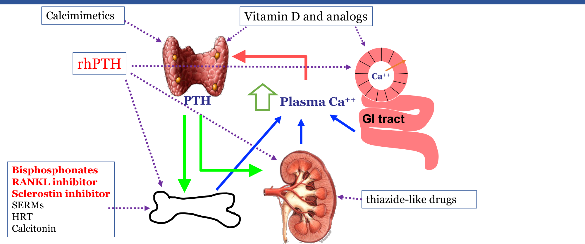

Drugs Affecting Vitamin D & Calcium Homeostasis
- Vitamin D needs sequential liver (→ calcidiol) then kidney (→ calcitriol, the active form) processing. PTH stimulates that kidney step; calcitriol then inhibits PTH once made — and it's calcidiol, not calcitriol, that's checked on a blood test, because calcitriol stays deceptively "normal" under that feedback even when true stores are low.
- Bisphosphonates stop bone breakdown (osteoclast apoptosis) but don't build new bone; teriparatide and romosozumab are the anabolic (bone-forming) options.
- ONJ and atypical femoral fracture are the serious, rare risks shared by bisphosphonates, denosumab, and romosozumab.
Learning Objectives
- List the forms of endogenous vitamin D, their required metabolism, and key pharmacological properties.
- Describe vitamin D's physiological actions, major therapeutic uses, and adverse effects.
- Explain the mechanism, pharmacology, adverse effects, and contraindications of the major antiresorptive and anabolic drug classes.
- Compare and contrast those drug classes' advantages and disadvantages.
A Quick Recap: Calcium Homeostasis
Everything on this page acts somewhere on this loop — a fall in plasma Ca++ triggers PTH release, which raises calcium three ways: pulling it from bone, reclaiming it in the kidney's distal tubule, and (via activating vitamin D) absorbing more of it from the gut.

Vitamin D: Forms & Metabolism
Skin (UV on 7-dehydrocholesterol) or diet supplies cholecalciferol (D3); diet alone supplies ergocalciferol (D2) (the vegan option). Both are inactive until the liver's 25-hydroxylase converts them to calcidiol (25-OH-D), then the kidney's 1α-hydroxylase converts that to calcitriol (1,25-(OH)2D), the active hormone. PTH stimulates that kidney step; calcitriol then inhibits PTH once enough is made. A separate enzyme, 24-hydroxylase, inactivates both calcidiol and calcitriol for clearance.

Blood tests check calcidiol, not calcitriol — it's long-lived and unregulated, so it reflects true stores. Calcitriol is actively defended by the PTH loop above, so it can look normal even when vitamin D is genuinely low.
| Form | Steps Still Needed | Notes |
|---|---|---|
| Ergocalciferol (D2) | Hepatic + renal | From food; vegan option |
| Cholecalciferol (D3) | Hepatic + renal | Animal source; the usual supplement choice |
| Calcifediol (25-OH-D3) | Renal only | Major circulating form, t½ 19 days. Used for 2° hyperparathyroidism in Stage 3–4 CKD with low 25-OH-D. |
| Calcitriol (1,25-(OH)₂D3) | None — already active | Skips both steps — used when the kidney itself can't 1α-hydroxylate (e.g. advanced CKD), or when speed matters. |
Actions, Uses & Toxicity
- Intestine: ↑ calcium and phosphate absorption. Kidney: ↑ calcium and phosphate reabsorption. Bone: resorption when Ca++ is needed, formation when it's plentiful (unlike PTH, which raises calcium but lowers phosphate).
- Therapeutic uses: prophylaxis/cure of nutritional rickets, metabolic rickets and osteomalacia, hypoparathyroidism (via analogs), and prevention/treatment of osteoporosis — though vitamin D and calcium alone don't meaningfully improve bone mineral density; that needs the drugs below.
- Hypervitaminosis D causes hypercalcemia: acute — nausea, vomiting, anorexia, fatigue, weakness; chronic — renal impairment, soft-tissue calcification (kidney, heart, vessels, skin), hypertension, possible arrhythmias.
Other Drugs Affecting Calcium & Bone

Antiresorptive drugs (bisphosphonates, RANKL inhibitors, HRT, SERMs, calcitonin) suppress osteoclasts to prevent bone loss. Bone-forming drugs (rhPTH, sclerostin inhibitors, fluoride) act anabolically, actively increasing bone mass and strength.
Bisphosphonates
Bind avidly to bone and inhibit the mevalonate pathway in osteoclasts, driving them to apoptosis — the net effect is slowed bone mineral dissolution, not new bone formation. Poor oral absorption (bind dietary calcium, must be taken on an empty stomach), renally excreted, and they accumulate in bone with prolonged retention.
| Generation | Drugs | Route |
|---|---|---|
| First (lowest potency) | Etidronate, clodronate, tiludronate | Oral |
| Second | Pamidronate, alendronate, ibandronate | Oral / IV |
| Third (highest potency) | Risedronate, zoledronate | Oral / IV (zoledronate: once yearly) |
Common: GI upset, bone/joint pain, hypocalcemia, flu-like symptoms with IV dosing. Serious but rare: osteonecrosis of the jaw (ONJ, more likely with high-potency/IV use) and atypical femoral fracture. Contraindicated with CrCl < 30 mL/min or esophageal abnormalities.
RANKL Inhibitor: Denosumab
Osteoblasts/osteocytes release RANKL, which drives osteoclast differentiation and activation. Denosumab is a human monoclonal antibody that binds RANKL directly, blocking that signal. It's as effective as bisphosphonates at reducing bone loss, keeps increasing BMD with long-term use, doesn't depend on renal clearance, and its effect is reversible — given subcutaneously.
Adverse effects overlap with bisphosphonates (GI upset, musculoskeletal pain, hypocalcemia) plus a higher infection risk (upper respiratory). ONJ risk is actually higher than with bisphosphonates. Contraindicated with hypocalcemia (or predisposition to it) or immunosuppression.
Bone-Forming Agents: Teriparatide & Romosozumab
Teriparatide (rhPTH) is the active 34-amino-acid fragment of PTH. The catch that makes it useful: PTH's effect depends on the pattern of exposure — continuous exposure (as in hyperparathyroidism) favors bone resorption, but short, intermittent daily peaks favor bone formation. Given subcutaneously, daily.
Romosozumab is a monoclonal antibody against sclerostin, the protein that normally inhibits bone formation — blocking it both increases formation and decreases resorption. Given subcutaneously, monthly.
Comparing the Classes
| Class | Route | Distinctive Adverse Effects | Key Contraindications |
|---|---|---|---|
| Bisphosphonates | Oral / IV | ONJ, atypical femoral fracture, nephrotoxicity (IV) | CrCl < 30, esophageal abnormalities |
| Denosumab | SC | Higher ONJ risk than BPs; upper respiratory infections | Hypocalcemia (or predisposition), immunosuppression |
| Teriparatide | SC, daily | Hypercalcemia/hypercalciuria; osteosarcoma in rats (limits use to ≤ 2 years) | CrCl < 30, hypercalcemia, metabolic bone disease |
| Romosozumab | SC, monthly | CV events (MI, stroke, death), ONJ, atypical femoral fracture | Hypocalcemia |
Adapted (not reproduced verbatim) from Dr. Fabiana Crowley, MSc, PhD (Department of Physiology and Pharmacology, Schulich School of Medicine), "Drugs Affecting Calcium Homeostasis."